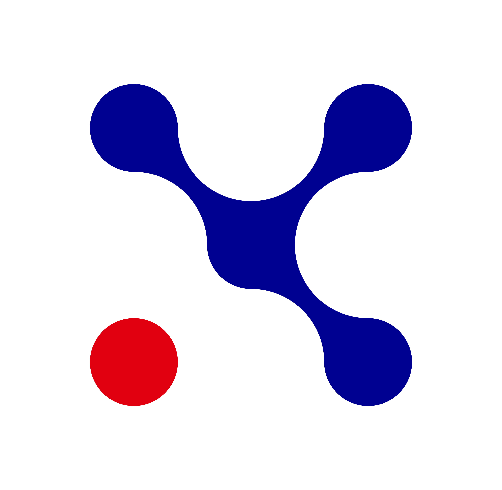

Mon parcours
Chaque expérience m'a permis de développer de nouvelles compétences, techniques comme humaines.
Stage au support informatique
Laboratoires Clarins
15 juin 2026 - 24 juillet 2026 (6 semaines)
Stage ouvrier au sein du support informatique : premiers pas en entreprise, avec des missions et des objectifs concrets.
Compétences acquises :
- Résolution de problèmes
- Écoute et compréhension des utilisateurs
- Acceptation du feedback

Simulation de gestion de crise cyber
Cyber Experience - Campus Cyber, Paris La Défense
Janvier 2025
Simulation de crise en cellule de six personnes aux rôles définis, à l'issue de la compétition Hack Ton Lycée.
Compétences acquises :
- Gestion du stress
- Prise de décision en contexte critique
- Communication orale
Engagements personnels
Sport, théâtre, secourisme, bénévolat
2022 - 2026
- Bénévolat
- Membre du Bureau Des Sports de l'EPITA
- Théâtre (2024 - 2025)
- Formation aux gestes de premiers secours, PSC1 (2024)
- Stage d'observation au Département du Val-d'Oise (2022)
- Championnat de France de triathlon UNSS (2022)
Stage au support informatique - Laboratoires Clarins
Six semaines au sein d'un service informatique du secteur industriel.
Association EPISPORT - EPITA
Membre du Bureau Des Sports de l'EPITA.
Cycle préparatoire ingénieur en informatique - EPITA
Formation à Villejuif, avec une spécialisation prévue en cybersécurité.
Cyber Experience - Campus Cyber
Simulation de gestion de crise cyber à Paris La Défense.
Hack Ton Lycée
Concours régional de cybersécurité (CTF et Bug Bounty).